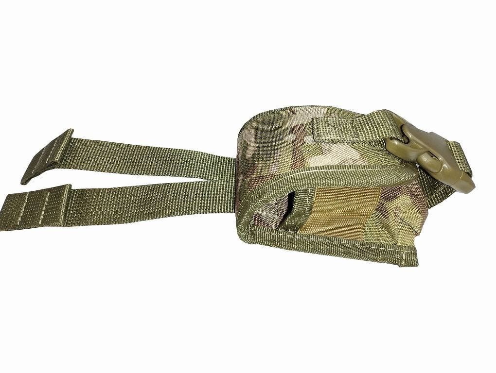
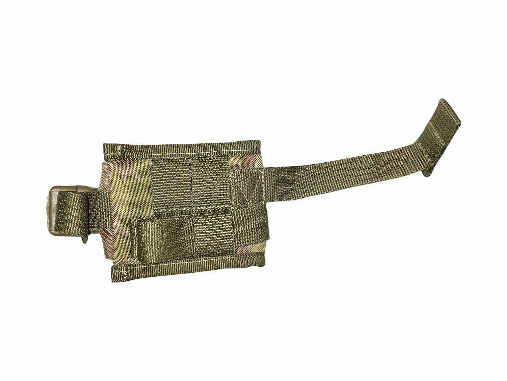
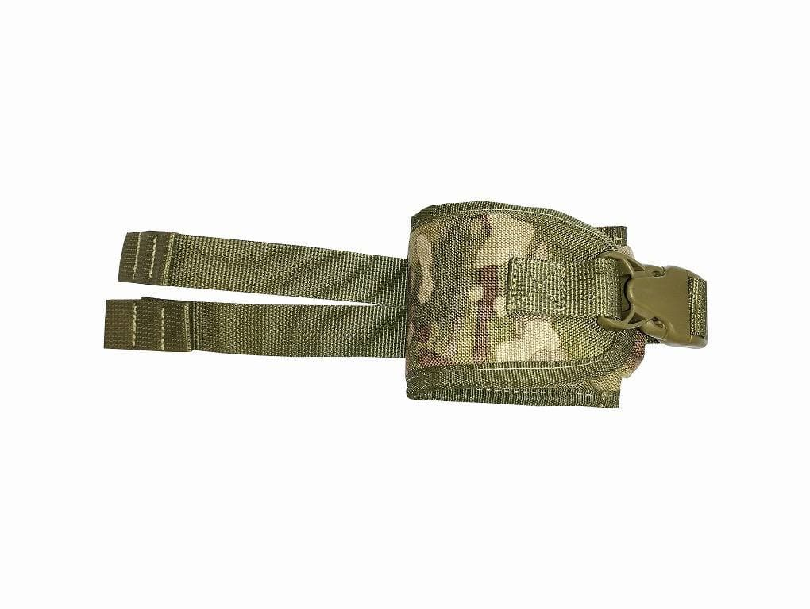

ЧОРНОБА-Ї
| Назва моделі | Зображення | Опис | Ціна в грн. |
|---|---|---|---|
| Розвантажувальні системи | |||
РС1 Мультікам 1000D Oxford |
Розвантажувальні системи Чорноба-Ї Міцна та надійна фурнітура. Професійний пошив. Кріплення додаткових підсумок за допомогою системи MOLLE. Матеріал: 1000D Oxford Розмір: Універсальний Колір: Мультікам |
770 | |
РС2 Чорна 1000D Oxford |
Розвантажувальні системи Чорноба-Ї Міцна та надійна фурнітура. Професійний пошив. Кріплення додаткових підсумок за допомогою системи MOLLE. Матеріал: 1000D Oxford Розмір: Універсальний Колір: Чорний |
770 | |
РПС Мультікам 1000D Oxford |
РПС ремінно-плечова система Чорноба-Ї Міцна та надійна фурнітура. Професійний пошив. Кріплення додаткових підсумок за допомогою системи MOLLE. Матеріал: 1000D Oxford Розмір: Універсальний Колір: Чорний |
1400 пояс+верх. | |
ТП01 1000D Oxford |
Тактичний пояс з якісною фурнітурою, застібкою швидкої фіксації та системою кріплення Molle Матеріал: 1000D Oxford |
750 | |
Підсумок під гранати Ф1 та РГД Нейлон 1000 d |
Підсумок під гранати Ф1 та РГД. Колір: мультікам. Матеріал: Нейлон 1000D Фіксація гранати на резинці 40 мм. та фастексом 25 мм. Обрамлення ремінною стропою 23 мм. Клапан на піні 4-5 мм. Проходили заміри з гранатами. Міцна та надйна фурнітура. Прфесійний пошив. Кріпиця за допомогою системи Моллі. |
200 | |
Підсумок під гранати Ф1 та РГД Cordura 1000 d |
   |
Легендарна тканина, яка витримає будь-які навантаження. Військове спорядження з Cordura 1000д, незважаючи на екстремальне використання, витримує багато років. |
210 |
Підсумок під магазини 7.62, 5.45 та AR Нейлон 1000 d |

|
Підсумок під магазини 7.62, 5.45 та AR Чорноба-Ї Резинка діаметер 4 мм. Професійний пошив. Кріпиться за допомогою системи Моллі. Колір: Мультікам.Обрамлення ремінною стропою 23 мм. В середині піні 4-5 мм. З боків поміж ремінною стрічкою 25 мм. пластикові вставки для удержання форми. Матеріал: 1000D Oxford |
210 |
Підсумок під магазини 7.62, 5.45 та AR Cordura 1000 d |

|
Легендарна тканина, яка витримає будь-які навантаження. Військове спорядження з Cordura 1000д, незважаючи на екстремальне використання, витримує багато років. Підсумок під магазини 7.62, 5.45 та AR Чорноба-Ї Резинка діаметер 4 мм. Професійний пошив. Кріпиться за допомогою системи Моллі. Колір: Мультікам.Обрамлення ремінною стропою 23 мм. В середині піні 4-5 мм. З боків поміж ремінною стрічкою 25 мм. пластикові вставки для удержання форми. |
230 |
Підсумок під магазини подвійний 7.62, 5.45 та AR Нейлон 1000 d |

|
Підсумок під магазини подвійний 7.62, 5.45 та AR. Чорноба-Ї Резинка ширина 40 мм. Професійний пошив. Кріпиться за допомогою системи Моллі. Липучка 50 мм. Колір: Мультікам. Обрамлення ремінною стропою 23 мм. Клапан на піні 4-5 мм. Клапан кріпиться до основи на липучці, тому висота клапану в даному підсумку може змінюватися в залежності від висоти магазинів. Матеріал: 1000D Oxford |
270 |
Підсумок під магазини подвійний 7.62, 5.45 та AR Cordura 1000 d |
|
Легендарна тканина, яка витримає будь-які навантаження. Військове спорядження з Cordura 1000д, незважаючи на екстремальне використання, витримує багато років.Підсумок під магазини подвійний 7.62, 5.45 та AR. Чорноба-Ї Резинка ширина 40 мм. Професійний пошив. Кріпиться за допомогою системи Моллі. Липучка 50 мм. Колір: Мультікам. Обрамлення ремінною стропою 23 мм. Клапан на піні 4-5 мм. Клапан кріпиться до основи на липучці, тому висота клапану в даному підсумку може змінюватися в залежності від висоти магазинів. |
300 |
Підсумок для скидання порожніх магазинів 7.62, 5.45 та AR. |
|
Підсумок для скидання порожніх магазинів 7.62, 5.45 та AR. Чорноба-Ї Професійний пошив. Кріпиться за допомогою системи Моллі. Колір: Мультікам. Матеріал: 1000D Oxford |
270 |